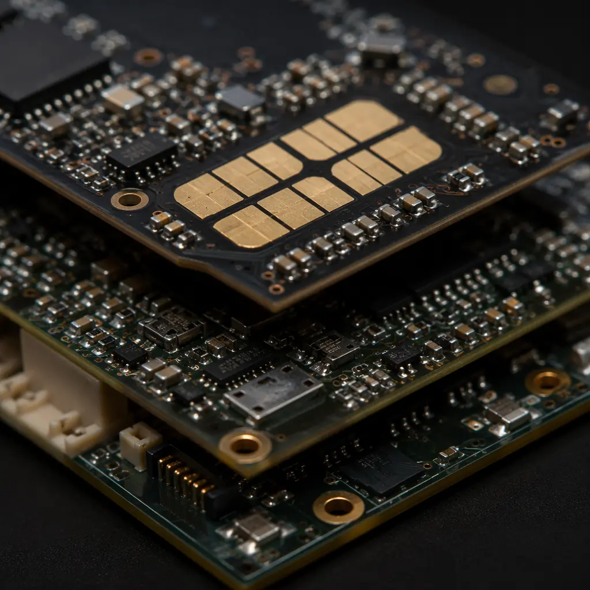
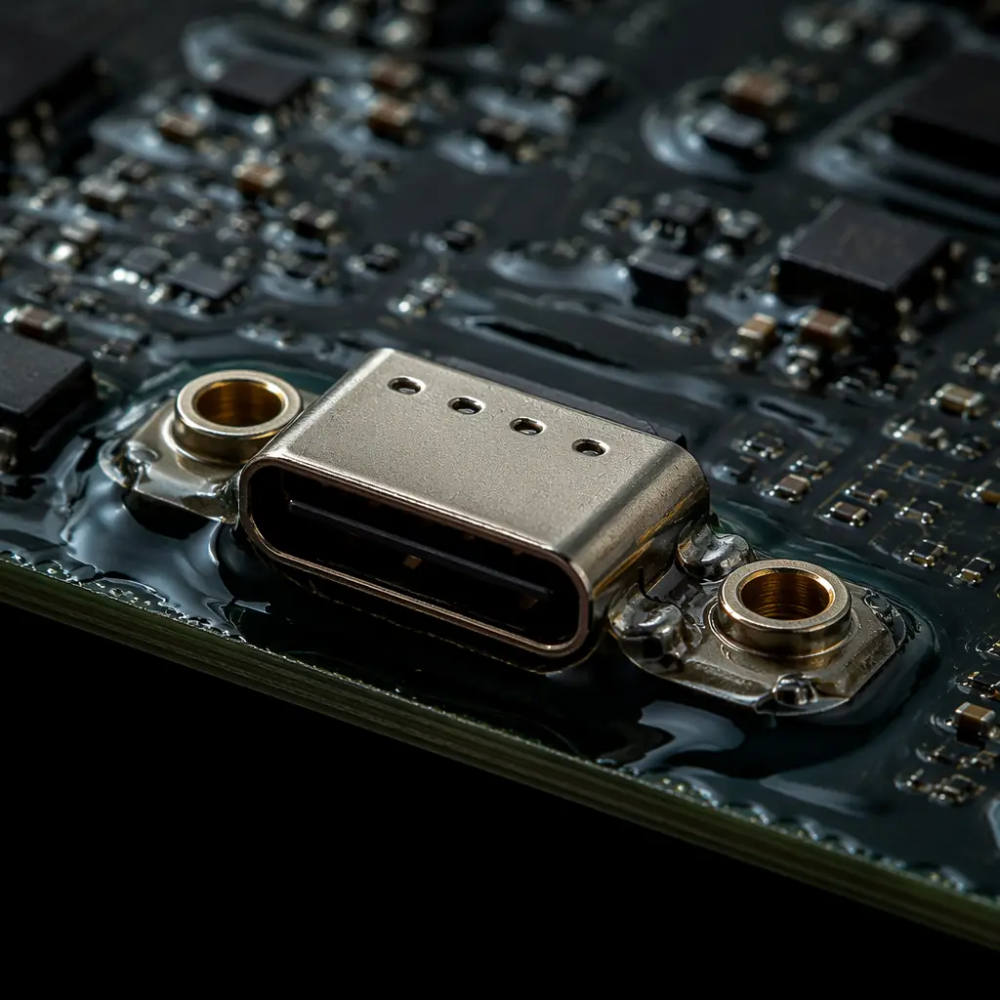

The global POS terminal market shipped over 140 million units in 2025, driven by contactless payment adoption, smartphone-based mPOS systems, and the EMV migration in emerging markets. Every one of those terminals contains at least one PCB that must simultaneously satisfy three conflicting requirements: PCI security standards that demand physical tamper resistance, retail environment durability that demands drop and spill survival, and consumer electronics cost pressure that demands BOM optimization.
POS terminal PCBs occupy a unique intersection of security engineering and consumer electronics manufacturing. A smartphone PCB can be replaced under warranty when the screen cracks. A payment terminal PCB that fails can expose cardholder data, trigger a PCI compliance audit, and cost the merchant their payment processing privileges. At Huaxing PCBA, we manufacture PCBs for payment terminal OEMs that integrate tamper-detection mesh layers, secure key storage isolation zones, and ruggedized connector reinforcement — all while meeting the 50,000-cycle insertion durability requirements of daily customer use.

PCI PTS Security Requirements and PCB Design Implications
PCI PIN Transaction Security (PTS) defines physical security requirements for payment terminals that directly impact PCB design and manufacturing. These are not software requirements — they are physical PCB design constraints enforced by certified testing laboratories during the PCI approval process.
Tamper-Detection Mesh — The Physical Security Envelope
A tamper-detection mesh is a serpentine trace pattern routed across multiple PCB layers surrounding the secure processor and PIN entry keypad contacts. Any drill attempt, probe penetration, or chemical etching attack breaks the mesh trace, triggering an immediate key erasure. The mesh must be routed on inner layers (not accessible from the board surface), use trace widths ≤4 mil with spacing ≤4 mil, and cover the entire secure area with no gaps larger than 0.3mm. Manufacturing these PCBs requires HDI technology with laser-drilled microvias and tight impedance control — standard 6/6mil trace/space capability is insufficient.
Secure Key Storage Isolation
The PCB area containing the secure MCU, cryptographic coprocessor, and battery-backed SRAM must be physically isolated from non-secure zones. This means: dedicated ground planes for the secure zone, no shared power planes that could be probed, and controlled-depth routing (blind vias that don't penetrate to layers accessible from the board edge). The PCB stackup design for a payment terminal must define which layers belong to the secure boundary and which are accessible to standard test points.
Zeroization Circuitry Redundancy
PCI PTS requires that tamper detection triggers key erasure (zeroization) even if the main battery is removed. The PCB must include a secondary power source — typically a supercapacitor or small primary cell — with its own tamper-detection mesh running on a separate set of layers from the main mesh. This adds 2-4 layers to the stackup compared to a non-secure PCB of equivalent functionality. Our design for testability guide covers strategies for testing secure circuitry without creating probe points that compromise the security boundary.
PCI Reality Check: The PCB is the foundation of payment terminal security. Software encryption is irrelevant if an attacker can probe the data bus between the keypad and the secure MCU. A properly designed tamper-detection PCB makes physical attacks detectable — and detection is sufficient because PCI PTS requires that detected tampering immediately destroys all cryptographic key material.
Ruggedized Design for Retail Environments
Payment terminals experience abuse that consumer electronics never see. The average POS terminal in a quick-service restaurant endures 200+ card insertions per day, multiple 1.5-meter drops onto tile floors per year, and periodic exposure to coffee, soda, and cleaning chemicals. The PCB must be designed for this environment from the connector level up.

Connector Reinforcement — The #1 Field Failure Point
USB-C, magnetic stripe reader (MSR) flex connectors, and SAM card sockets are the three most common field failure points on POS terminal PCBs. Through-hole anchor tabs are mandatory for USB-C receptacles — surface-mount-only USB-C connectors will tear pads off the PCB within months. MSR flex connectors must use reinforced SMT with additional mechanical anchoring. SAM card sockets require gold-plated contacts rated for 50,000 insertion cycles minimum. See our copper weight and pad design guide for connector reliability optimization.
Conformal Coating for Spill Protection
POS terminals in food service environments face liquid ingress from spills, condensation, and cleaning. Selective conformal coating — typically acrylic or silicone-based — protects the PCB without interfering with connector contacts, test points, or thermal dissipation paths. Coating thickness of 25-75μm is standard; areas around the smart card reader contacts and MSR head must be masked to prevent coating from insulating the contact surfaces. Our conformal coating guide covers material selection for different environmental exposure levels.
Drop and Vibration Survivability
POS terminals must survive multiple 1.5m drops onto concrete (per PCI PTS v6) and continuous vibration from countertop environments. BGAs and QFN packages require underfill for drop protection. Heavy components (inductors, transformers, large electrolytics) need additional mechanical anchoring — either adhesive bonding or through-hole retention clips. Edge-mounted connectors (SAM, SIM, MSR) must have their mounting pads reinforced with teardrop geometries to prevent pad lift during drop impacts.
EMV Compliance and Signal Integrity
EMV Level 1 and Level 2 certification requires that the contact and contactless interfaces operate reliably across the full range of card types and insertion angles. This places specific signal integrity demands on the PCB that go beyond standard digital design rules.
The contact smart card interface (ISO 7816) operates at clock speeds up to 5 MHz on a bus that runs from the secure MCU to the card socket contacts — a trace length that can exceed 60mm in full-size terminals. Impedance control at ±10% is required on these signals, with ground plane continuity maintained across the entire trace length. The contactless interface (ISO 14443) drives a 13.56 MHz antenna coil that must be tuned to the specific PCB stackup — the antenna trace width, spacing, and number of turns are all stackup-dependent and must be characterized during impedance testing with a TDR measurement confirming the target inductance before production sign-off.
What This Means for Your Payment Terminal PCB Order
POS terminal PCBs are high-mix, security-critical assemblies where the cost of a field failure is measured in PCI compliance audits, not just warranty returns. Specify your PCI PTS security level in the fabrication package, identify the secure boundary on the PCB layout, and require tamper-detection trace continuity testing as part of the electrical test protocol — not as a separate special process. At Huaxing PCBA, we support payment terminal OEMs with HDI PCBs (3/3mil trace/space, laser microvias), tamper-detection mesh routing on inner layers, conformal coating for environmental protection, and full material traceability to satisfy PCI and EMV certification audit requirements. Every board ships with a certificate of conformance that includes impedance test data, tamper mesh continuity verification, and coating thickness measurements.